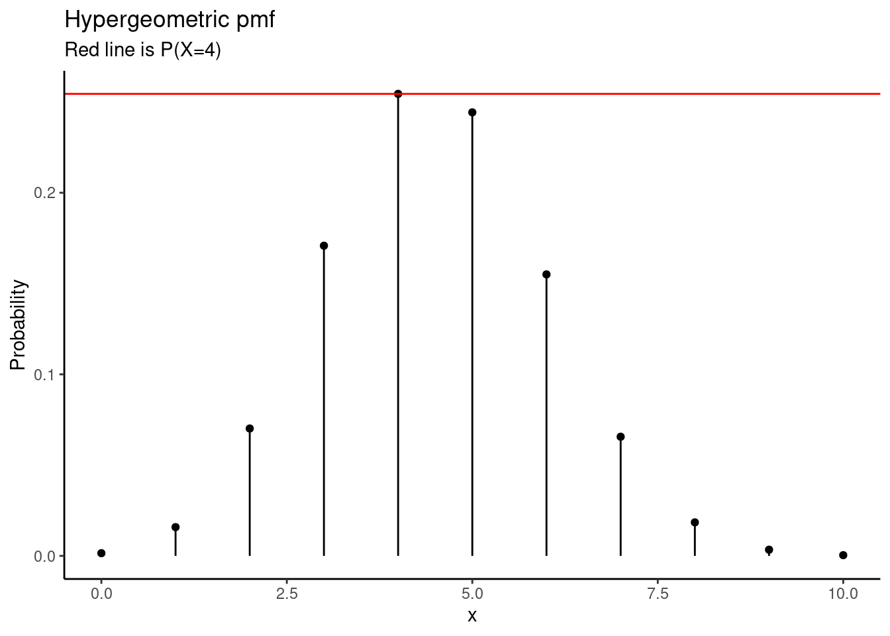
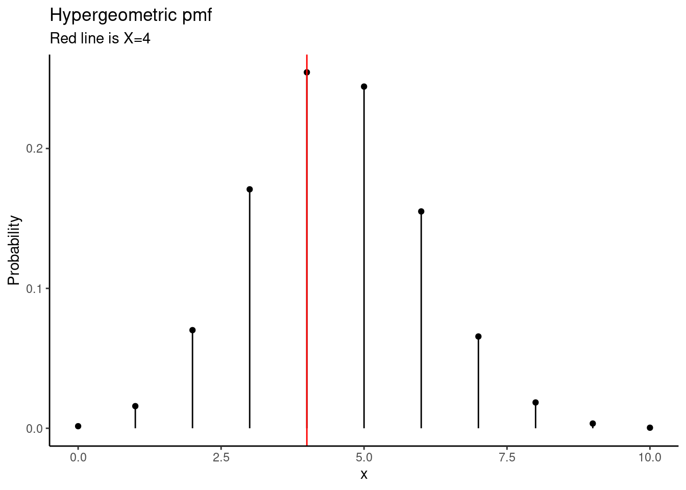
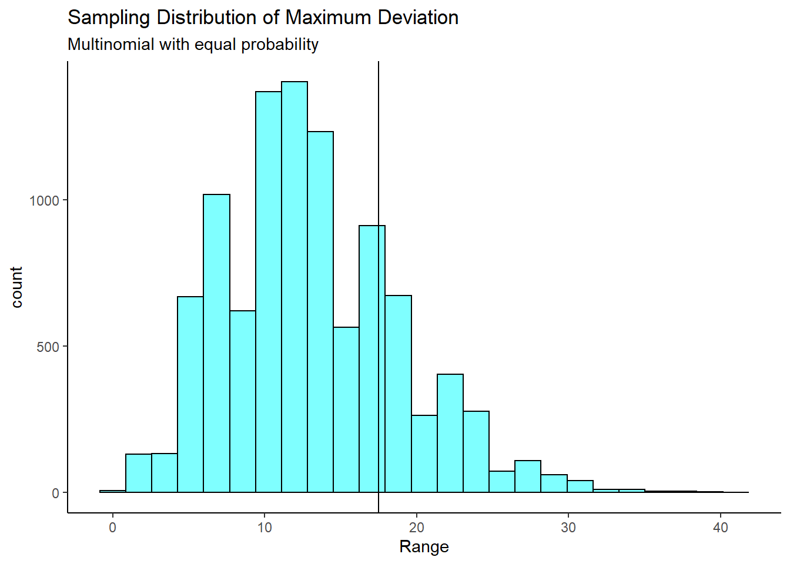
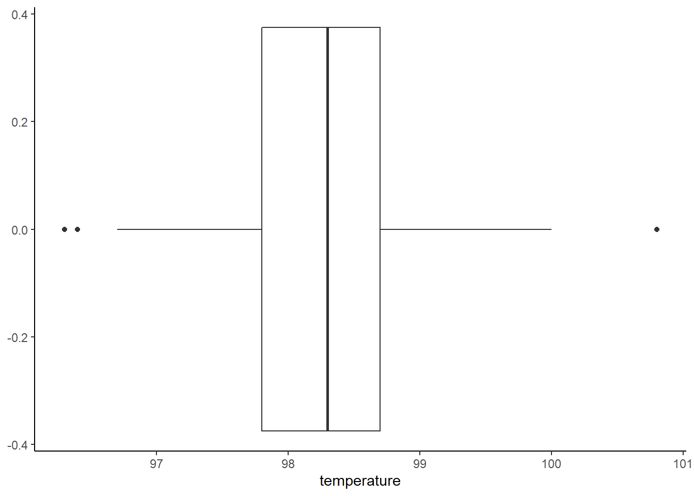

Chapter 18 Empirical p-values
18.1 Objective
Conduct all four steps of a hypothesis test using probability models.
18.2 Homework
18.2.1 Problem 1
Repeat the analysis of the yawning data from last lesson but this time use the hypergeometric distribution.
Is yawning contagious?
An experiment conducted by the MythBusters, a science entertainment TV program on the Discovery Channel, tested if a person can be subconsciously influenced into yawning if another person near them yawns. 50 people were randomly assigned to two groups: 34 to a group where a person near them yawned (treatment) and 16 to a group where there wasn’t a person yawning near them (control). The following table shows the results of this experiment.
\[ \begin{array}{ccc|cc|c} & & &\textbf{Group} & & \\& & & Treatment & Control & Total \\ &\hline \textbf{Result} & \textit{Yawn} & 10 & 4 & 14 \\ & & \textit{No Yawn} & 24 & 12 & 36\\ &\hline &Total & 34 & 16 & 50 \end{array} \]
The data is in the file “yawn.csv.”
- What are the hypotheses?
\(H_0\): Yawning is not contagious, someone in the group yawning does not impact the percentage of the group that yawns.
\(H_A\): Yawning does have an impact, it is contagious. If someone yawns then you are more likely to yawn.
- Calculate the observed statistic, pick a cell.
yawn <- read_csv("data/yawn.csv")glimpse(yawn)## Rows: 50
## Columns: 2
## $ group <chr> "treatment", "treatment", "control", "treatment", "treatment",…
## $ outcome <chr> "no_yawn", "no_yawn", "no_yawn", "no_yawn", "no_yawn", "yawn",…inspect(yawn)##
## categorical variables:
## name class levels n missing
## 1 group character 2 50 0
## 2 outcome character 2 50 0
## distribution
## 1 treatment (68%), control (32%)
## 2 no_yawn (72%), yawn (28%)tally(~outcome+group,data=yawn,margins = TRUE)## group
## outcome control treatment Total
## no_yawn 12 24 36
## yawn 4 10 14
## Total 16 34 50The random variable is the number of control patients that yawned from a population of 16 control patients, 34 treatment patients, where a total of 14 yawned.
- Find the p-value using the hypergeometric distribution.
In this case we want to find \(\mbox{P}(X \leq 4)\) and double it since it is a two-sided test.
phyper(4,16,34,14)## [1] 0.5127818Doubling this will take us above 1, which is not valid. You might have seen this when we did the randomization test for this problem in a previous lesson. Again, since the hypergeometric is not symmetrical, we can’t just double the p-value from the one-sided test. We could simply report the result as \(\approx 1\). If we look at a plot of the pmf, see the figure, you see that \(X=4\) is the highest probability outcome. Thus the p-value is 1 if we sum all the values less than or equal to \(P(X=4)\).
gf_dist("hyper",m=16,n=34,k=14) %>%
gf_hline(yintercept = dhyper(4,16,34,14),color="red") %>%
gf_labs(title="Hypergeometric pmf",
subtitle="Red line is P(X=4)",
y="Probability") %>%
gf_theme(theme_classic)## Warning: geom_hline(): Ignoring `mapping` because `yintercept` was provided.
fisher.test(tally(~group+outcome,data=yawn))##
## Fisher's Exact Test for Count Data
##
## data: tally(~group + outcome, data = yawn)
## p-value = 1
## alternative hypothesis: true odds ratio is not equal to 1
## 95 percent confidence interval:
## 0.2790902 6.5930656
## sample estimates:
## odds ratio
## 1.244531temp<-dhyper(0:14,16,34,14)
sum(temp[temp<=dhyper(4,16,34,14)])## [1] 1- Plot the the sampling distribution.
gf_dist("hyper",m=16,n=34,k=14) %>%
gf_vline(xintercept =4,color="red" ) %>%
gf_theme(theme_classic()) %>%
gf_labs(title="Hypergeometric pmf",
subtitle="Red line is X=4",
y="Probability")
- Determine the conclusion of the hypothesis test.
Since p-value, 1, is high, larger than 0.05, we fail to reject the null hypothesis of yawning is not contagious. The data do not provide convincing evidence that people are more likely to yawn if a person near them yawns.
- Compare your results with the randomization test.
This result is essentially the same as the randomization test.
18.2.2 Problem 2
Repeat the golf ball example using a different test statistic.
Use a level of significance of 0.05.
- State the null and alternative hypotheses.
We think that the numbers are not all equally likely. The question of one-sided versus two-sided is not relevant in this test, you will see this when we write the hypotheses.
\(H_0\): All of the numbers are equally likely.\(\pi_1 = \pi_2 = \pi_3 = \pi_4\) or \(\pi_1 = \frac{1}{4}, \pi_2 =\frac{1}{4}, \pi_3 =\frac{1}{4}, \pi_4 =\frac{1}{4}\)
\(H_A\): The is some other distribution of percentages in the population. At least one population proportion is not \(\frac{1}{4}\).
- Compute a test statistic.
golf_balls <- read_csv("data/golf_balls.csv")inspect(golf_balls)##
## quantitative variables:
## name class min Q1 median Q3 max mean sd n missing
## ...1 number numeric 1 1 2 3 4 2.366255 1.107432 486 0tally(~number,data=golf_balls,format = "proportion")## number
## 1 2 3 4
## 0.2818930 0.2839506 0.2201646 0.2139918I will use the maximum deviation from the expected value
obs <- max(abs(tally(~number,data=golf_balls) -121.5))
obs## [1] 17.5- Determine the p-value.
set.seed(2517)
results <- do(10000)*max(abs(table(sample(1:4,size=486,replace=TRUE))-121.5))results %>%
gf_histogram(~max,fill="cyan",color="black") %>%
gf_vline(xintercept = obs) %>%
gf_labs(title="Sampling Distribution of Maximum Deviation",
subtitle="Multinomial with equal probability",
x="Range") %>%
gf_theme(theme_classic)
prop1(~(max>=obs),data=results)## prop_TRUE
## 0.2382762- Draw a conclusion.
Since this p-value is larger than 0.05, we do not reject the null hypothesis. That is, based on our data, we do not find statistically significant evidence against the claim that the number on the golf balls are equally likely.
18.2.3 Problem 3
Body Temperature
Shoemaker6 cites a paper from the American Medical Association7 that questions conventional wisdom that the average body temperature of a human is 98.6. One of the main points of the original article – the traditional mean of 98.6 is, in essence, 100 years out of date. The authors cite problems with Wunderlich’s original methodology, diurnal fluctuations (up to 0.9 degrees F per day), and unreliable thermometers. The authors believe the average temperature is less than 98.6. Test the hypothesis.
- State the null and alternative hypotheses.
\(H_0\): The average body temperature is 98.6 \(\mu = 98.6\)
\(H_A\): The average body temperature is less than 98.6. \(\mu < 98.6\)
- State the significance level that will be used.
There is no reason to believe one type of error is more important than another.
\(\alpha = 0.05\)
- Load the data from the file “temperature.csv” and generate summary statistics and a boxplot of the temperature data. We will not be using gender or heart rate for this problem.
temperature <- read_csv("data/temperature.csv")glimpse(temperature)## Rows: 130
## Columns: 3
## $ temperature <dbl> 96.3, 96.7, 96.9, 97.0, 97.1, 97.1, 97.1, 97.2, 97.3, 97.4…
## $ gender <dbl> 1, 1, 1, 1, 1, 1, 1, 1, 1, 1, 1, 1, 1, 1, 1, 1, 1, 1, 1, 1…
## $ hr <dbl> 70, 71, 74, 80, 73, 75, 82, 64, 69, 70, 68, 72, 78, 70, 75…favstats(~temperature,data=temperature)## min Q1 median Q3 max mean sd n missing
## 96.3 97.8 98.3 98.7 100.8 98.24923 0.7331832 130 0temperature %>%
gf_boxplot(~temperature) %>%
gf_theme(theme_classic)
- Compute a test statistic. We are going to help you with this part. We cannot do a randomization test since we don’t have a second variable. It would be nice to use the mean as a test statistic but we don’t yet know the sampling distribution of the sample mean.
Let’s get clever. If the distribution of the sample is symmetric, this is an assumption but look at the boxplot and summary statistics to determine if you are comfortable with it, then under the null hypothesis the observed values should be equally likely to either be greater or less than 98.6. Thus our test statistic is the number of cases that have a positive difference between the observed value and 98.6. This will be a binomial distribution with a probability of success of 0.5. You must also account for the possibility that there are observations of 98.6 in the data.
First let’s find out how many data points are equal to 98.6.
temperature %>%
count(temperature==98.6)## # A tibble: 2 × 2
## `temperature == 98.6` n
## <lgl> <int>
## 1 FALSE 120
## 2 TRUE 10We have ten observations equal to 98.6, we will split this and make 5 have a positive difference and 5 have a negative difference.
Next determine that number of subjects that have a positive difference.
temperature %>%
mutate(pos=(temperature-98.6)>0) %>%
summarise(num_greater=sum(pos))## # A tibble: 1 × 1
## num_greater
## <int>
## 1 39Therefore we have a total 44 subjects whose temperature was greater than 98.6 and 86 who had a temperature less than 98.6
- Determine the p-value.
Out of 130 subjects, 86 had a temperature less than 98.6 and 44 had a temperature greater. We can use either number to determine a p-value. If the null hypothesis were true, then the probability of 86 or more, this is more extreme under that alternative hypothesis, is
1-pbinom(85,130,.5)## [1] 0.0001447744We could have also done 44 or less.
pbinom(44,130,.5)## [1] 0.0001447744Our p-value is 0.00014.
Some other choices are to drop the 10 data points equal to 98.6. We should always be careful about deleting data. We could be extremely conservative and move all 10 points to greater than 98.6 and if we still reject, we will comfortable about our conclusion. Finally, we could randomly assign each point to one side or the other. You can check the p-values for each of these methods.
- Draw a conclusion.
Based on our data, if the true mean body temperature is 98.6, then the probability of having 86 or more subjects out of 130 with temperatures below this is 0.00014. This is too unlikely so we reject the hypothesis that the average body temperature is 98.6.
This is a clever way to test the claim. Make sure you understand how we solved. In the coming lessons we will show you alternative ways to attack the problem. We made it into a binomial random variable. The only assumption is independence and symmetry.
Notice that by descritizing this problem, we are taking information away. However, the p-value is still small.
L. Shoemaker Allen (1996) What’s Normal? – Temperature, Gender, and Heart Rate, Journal of Statistics Education, 4:2↩︎
Mackowiak, P. A., Wasserman, S. S., and Levine, M. M. (1992), “A Critical Appraisal of 98.6 Degrees F, the Upper Limit of the Normal Body Temperature, and Other Legacies of Carl Reinhold August Wunderlich,” Journal of the American Medical Association, 268, 1578-1580.↩︎